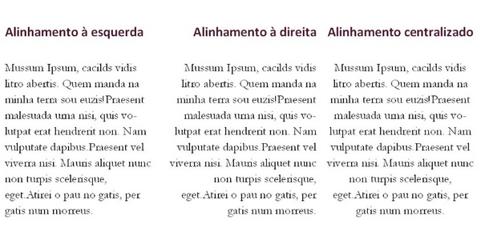
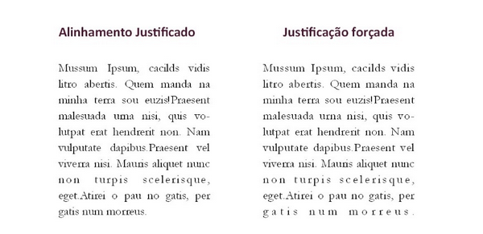
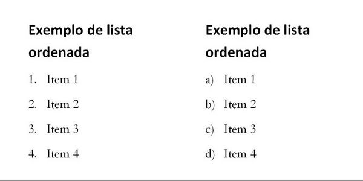

Estilos de Parágrafo
Os parágrafos são conjuntos de texto que podem ser entendidos como todo o texto entre cada ponto final, ou entre cada quebra de linha. Os parágrafos possuem propriedades particulares como espaçamento entre linhas, tabulação, letra capitular, alinhamento entre outros. Veremos algumas dessas propriedades a partir de agora.

Espaçamentos
Os parágrafos possuem três tipos de espaçamento, o espaçamento antes do parágrafo, que corresponde ao espaço vazio entre a última linha do parágrafo anterior e a primeira linha do atual, o espaçamento depois do parágrafo, que vai da última linha do parágrafo atual até a primeira linha do próximo parágrafo, e o espaçamento entre linhas. O espaçamento entre linhas justo corresponde a uma linha, que na realidade é o tamanho de uma letra minúscula entre o topo das letras maiúsculas e a base das letras da linha superior, esse é chamado ainda de espaçamento simples, quanto maior o espaçamento entre linhas, mais espaço o parágrafo ocupará.
Recuos
Os recuos direito e esquerdo correspondem ao espaço vazio entre as laterais do parágrafo e a margem da página. Quando um texto, ou caixa de texto ocupa várias colunas os recuos podem ainda interferir no espaço entre o parágrafo e a borda da caixa de texto ou à guia da coluna. A menos que haja necessidade o recuo é desnecessário na maioria dos casos.

Alinhamento
Um parágrafo pode ser alinhado à esquerda, à direta ou centralizado na página, caixa de texto ou coluna em que se encontra, existe ainda a possibilidade de justificar um parágrafo, de forma que ele esteja alinhado de ambos os lados diminuindo ou aumentando automaticamente o espaço entre as palavras. Na opção de justificação existe ainda a justificação forçada que faz com que a última linha também esteja justificada. Veja a diferença entre cada um:
 Existem outras propriedades que podem ser configuradas em um parágrafo como cor, bordas, cor de fundo e efeitos de contorno, brilho e sombra que variam de acordo com o software utilizado, e para isso deveremos entrar no estudo destes softwares, o que será feito nos próximos capítulos.
Letra Capitular
A letra capitular tem este nome porque costuma ser utilizada no primeiro parágrafo de cada capítulo e consiste na primeira letra do parágrafo que, encaixada dentro do espaço do parágrafo tem seu tamanho aumentado em duas, três, quatro ou mais linhas, o tamanho mais utilizado é de três linhas. Veja um exemplo abaixo:

Tabulação
A tabulação é algo bem simples e não precisa de imagem para exemplificar, você notou que em toda essa apostila cada parágrafo possui um espaço na primeira linha? Este espaço é chamado de tabulação. Existe três tipos de tabulação, a tabulação pequena que possui um tamanho de quatro espaços (da barra de espaço), e a tabulação grande que possui o tamanho de oito espaços, existe ainda a tabulação personalizada que pode ser inserida até automaticamente e seu tamanho é medido em pontos, por exemplo, a tabulação automática do Word possui um tamanho de 1,5pts.
Listas
Em várias situações ao escrever textos precisaremos organizar itens em listas, as listas dividem-se em listas com marcadores, ou listas ordenadas. Listas com marcadores são utilizadas ao descrever um conjunto de itens que não precisam necessariamente ter uma relação entre si. Os marcadores de uma lista com marcadores são símbolos, ou glifos, que definem cada item dentro da lista, veja alguns exemplos:

Listas ordenadas
Já as listas ordenadas são utilizadas para descrever itens que possuem relação entre si como itens de um inventário ou questões de uma prova, alguns softwares oferecem até mesmo maneiras de se formatar sub-listas, ou seja, listas dentro de outras listas, como, por exemplo, questões de múltipla escolha dentro de um questionário, veja alguns exemplos de listas ordenadas:
Efeitos de parágrafo
Dependendo do software utilizado, propriedades especiais para a formatação de parágrafo podem ser incluídas, como: Cor de Fundo, Bordas, Sombreamento, Caixas de Texto entre outros. Veremos os principais recursos nessa categoria nos próximos capítulos.
Pode haver ainda outras propriedades a serem definidas para cada parágrafo ou página, em alguns é possível criar ainda estilos predefinidos de caractere, parágrafo e título.
Em softwares de edição de texto como o Microsoft Word é possível escrever diretamente sobre a página e em softwares de editoração e design gráfico é preciso criar caixas de texto. Veremos estes recursos e muitos outros a partir de agora.